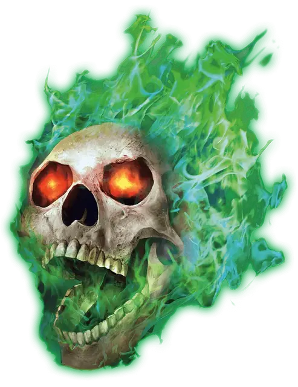

Пылающий череп
Flameskull
Крошечная Нежить, нейтрально-злая

Класс Доспеха 13
Хиты 40 (9к4 + 18)
Скорость 0 футов, летая 40 футов (парит)
| мод | спас | ||
|---|---|---|---|
| СИЛ | 1 | −5 | −5 |
| ЛОВ | 17 | +3 | +3 |
| ТЕЛ | 14 | +2 | +2 |
| мод | спас | ||
|---|---|---|---|
| ИНТ | 16 | +3 | +3 |
| МДР | 10 | +0 | +0 |
| ХАР | 11 | +0 | +0 |
Навыки Восприятие +2, Магия +5
Сопротивление урону некротическая энергия, электричество; колющий
Иммунитет к урону огонь, холод, яд
Иммунитет к состояниям сбивание с ног, испуг, паралич, очарование, отравление
Чувства тёмное зрение 60 футов, пассивное Восприятие 12
Языки Общий
Опасность 4 (1100 опыта)
Бонус мастерства +2
Среда обитания Подземье
Особенности
Свечение. Пылающий череп испускает тусклый свет в радиусе 15 футов, либо яркий свет в радиусе 15 футов и тусклый свет в пределах ещё 15 футов. Он может действием переключаться между этими двумя вариантами.
Сопротивление магии. Пылающий череп совершает с преимуществом спасброски от заклинаний и прочих магических эффектов.
Восстановление. Если пылающий череп уничтожен, он восстанавливает все свои хиты через 1 час, если его останки не сбрызнут святой водой или на них не наложат рассеивание магии или снятие проклятья.
Использование заклинаний. Пылающий череп является заклинателем 5-го уровня. Его базовой характеристикой является Интеллект (Сл спасброска от заклинания 13, +5 к попаданию атаками заклинаниями). Для накладывания заклинаний ему не требуются ни соматические, ни материальные компоненты. У него подготовлены следующие заклинания волшебника:
• Заговоры (неограниченно): волшебная рука [mage hand];
• 1 уровень (3 ячейки): волшебная стрела [magic missile], щит [shield];
• 2 уровень (2 ячейки): пылающий шар [flaming sphere], размытый образ [blur];
• 3 уровень (1 ячейка): огненный шар [fireball].
Действия
Мультиатака. Пылающий череп дважды использует Огненный луч.
Огненный луч. Дальнобойная атака заклинанием: +5 к попаданию, дистанция 30 футов, одна цель. Попадание: Урон огнём 10 (3к6).
Описание
Сверкание зелёного пламени и безумный, раскатистый смех следуют за бестелесным черепом, когда тот патрулирует свою территорию. Когда неживой пылающий череп обнаруживает вторжение, он атакует нарушителей огненными лучами из глаз и ужасными заклинаниями, вызываемыми из тёмного кладезя его памяти.
Тёмные заклинатели создают пылающие черепа из останков мёртвых волшебников. По завершении ритуала из черепа вырывается зелёное пламя, знаменуя его ужасающее перерождение.
Наследие жизни. Пылающий череп лишь смутно помнит свою прошлую жизнь. И хотя он и может говорить своим прежним голосом и вспоминать важные события из своего прошлого, это всего лишь отголосок его прошлой личности. Впрочем, трансформация в нежить оставляет ему полный доступ к магии, коей он обладал при жизни, позволяя творить заклинания даже без материальных и соматических компонентов, которые он не способен предоставить, по понятным причинам.
Связанные навек. Разумные и бдительные, пылающие черепа служат своему создателю, защищая спрятанные клады, секретные места или конкретных личностей. Пылающие черепа выполняют приказы, отданные им при их создании, и толкуют их буквально. Создатель пылающего черепа должен хорошенько продумать приказы, чтобы быть уверенным, что существо выполнит их верно.
Охваченные пламенем. Пламя, покрывающее пылающий череп, горит постоянно, создавая яркий свет от существа. Череп контролирует пламя и может использовать его в качестве оружия — фокусируя его в лучи из своих пустых глазниц.
Жуткое возрождение. Пылающий череп вновь собирается из разбитых кусков, если его не окропить святой водой или не подвергнуть заклинаниям рассеивание магии или снятия проклятья. Если он не может более выполнять то, для чего был создан, возрождённый пылающий череп более никому не принадлежит и действует независимо.
Натура нежити. Пылающему черепу не нужен воздух, еда, питьё и сон.